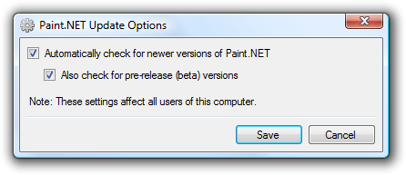

Help Menu
This menu provides quick access to this documentation, the ability to send feedback or a bug report to the authors of Paint.NET, access to various online resources, the ability to choose the language, and the ability to show the About box.

Help Topics
This launches the help file (which you are currently reading).
Paint.NET Website
This will open the Paint.NET website, http://www.getpaint.net.
-
Donate
This will open a web browser to a page that will let you donate to Paint.NET, http://www.getpaint.net/donate.html.
-
Forum
This will open a web browser to the Paint.NET forum website where there is an active user community.
-
Tutorials
This will open a web browser to the section of the Paint.NET forum that is dedicated to publishing tutorials. These tutorials run the gamut from easy to advanced, including such effects as "fiery text", exploding planets, and how to draw cartoons. The contents are constantly being added to or updated, so be sure to check back often!
-
Plugins
This will open a web browser to the section of the Paint.NET forum that is dedicated to publishing plugins. Some examples of plugins include support for the DDS and PCX file formats, a "toon" effect, drop shadows, and a very useful and unique "conditional hue and saturation" plugin. Please note that these plugins are provided by members of the forum, and the Paint.NET team can provide no support for them.
-
Send feedback or bug report
This will launch your default e-mail client with a template that enables you to either send a bug report or general feedback regarding Paint.NET.
If you are sending a bug, please make sure to include the following information:
A step-by-step description of how to reproduce the problem, error, or crash
If you are reporting a crash, please include the contents of the "pdncrash.log" file which is on your desktop (if you can not find this file, then don't worry about it).
A brief description of your computer's specifications. This includes the CPU type and speed, amount of memory (not hard drive space), and version of Windows.
Language
This submenu will let you choose which language Paint.NET is displayed in.
-
Check for Updates
By default, Paint.NET automatically checks for updates every five (5) days. It only checks for updates while it is running (a background program is not installed to do this), and no personal information is transmitted from your computer during the process (it works by downloading a text file from the Paint.NET website and inspecting its contents).

Clicking on the Options button will show this dialog:

In Windows XP and Windows Server 2003, Paint.NET will only check for updates for users who are part of the Administrators group, and will only allow these users to use the Check for Updates command.
In Windows Vista, Paint.NET will allow any user to check for updates. However, in order to install the update or to change the update options you must provide elevation consent (via UAC), or provide the login credentials for a user with administrator privileges.
-
About
This shows some information about Paint.NET including the copyright and list of contributors.

Copyright © 2007
Rick Brewster, Tom Jackson, and past contributors. Portions Copyright
© 2007 Microsoft Corporation. All Rights
Reserved.